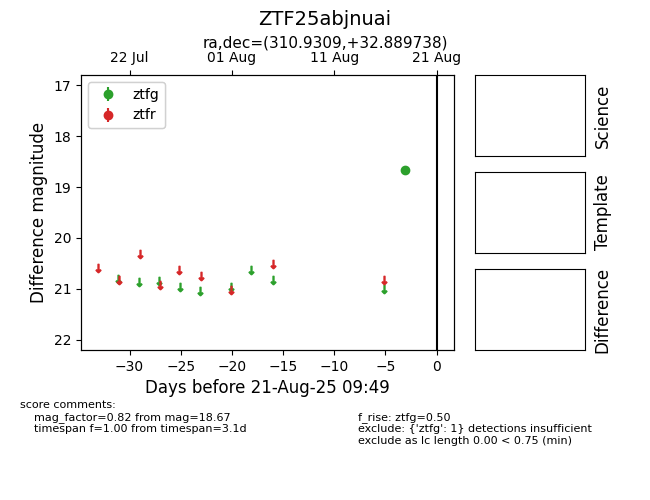

Target ZTF25abjnuai at 2025-08-21 09:49, see:
FINK: fink-portal.org/ZTF25abjnuai
Lasair: lasair-ztf.lsst.ac.uk/objects/ZTF25abjnuai
ALeRCE: alerce.online/object/ZTF25abjnuai
alt names
ZTF25abjnuai (ztf,alerce)
coordinates:
equatorial (ra, dec) = (310.9309,+32.88974)
galactic (l, b) = (74.7746,-5.97337)
photometry
last ztfg=18.67
1 ztfg detections
